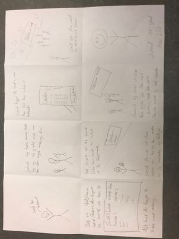

Informatik Noter
HtML står for HyperText Markup Language. HTML's formål er at få tekst og billeder på en hjemmeside.
Link til flere noter HTML: https://www.w3schools.com/html/html_intro.asp
Javascript er programeringssprog. Som hjælper hjemmesiden dynamisk.
CSS hjælper til at definere hvordan siden skal se ud.
Link til flere CSS: https://www.w3schools.com/Css/css_intro.asp
Design:
contrast: Du skal have nogle gode contraster for eksempel sort eller hvid. Hvis man skal læse noget skal man kunne læse det.
Alignment:
Alignment kan flytte rundt med tekst eller billereder sådan så de er endten er i midten, højdre og venstre. Som "div align="center".
Proximity:
Proximity er når man skriver nogle sætninger om man så sætter det i hjørnet. man skal helst give det lidt plads så det ser mere smuft ud.
Repetition:
Man skal hold det consistens. Der skal være noget orden.
White space:
Hvis der er meget hvidt på en hjemme siden fokuser man mere på midten for eksempel google søge maskine der er meget hvidt space.
Console.log.
Hvis du skriver console.log("Hello world!") vil outputtede være hello world hvis man går ind i F12 og klikker på console. Link til noter https://www.w3schools.com/jsref/met_console_log.asp
Variabel:
En variabel er noget som kan ændres på let,const og var. let=variabel og const= det er en konstant som altid har den samme værdig. link til noter https://www.w3schools.com/js/js_variables.asp
Datatyper.
Javascript kan indeholde forskellige datatyper som numre, objekter og flere.
link til noter https://www.w3schools.com/js/js_datatypes.asp
Array:
Array er en variabel som kan holde flere forskellige ting. For eksempel biler:
const cars = ["Saab", "Volvo", "BMW"];
Loop:
Loops er en god ting fordi loopet gør at den samme code kører hver gang om og om igen, men med en forskellig værdig. Der er forskellige loops, men det mest normale er for (let i = 0; i < cars.length; i++). Links til flere loops:https://www.w3schools.com/js/js_loop_for.asp.
Prompt/Confirm/Alert:
Prompt/Confirm/Alert er en slags pop op boks.
Prompt kan skrive et input som for eksempel han usernavn. prompt("Please enter your name").
confirm box er er hvis en player dør i flappy spillet og han så kommer der en confirm box op som sprøger om du vil starte forfra.
Alrert er nogle som bliver skrevet på skærmen hvis du for eksempel dør i flappy spillet. alert("You died");
Nogle bruger hvad har brugerne behøv for. Problemer. Hvordan vi skal i imødekomme dem.
• Intervies
• Observations
• Surveys
• User Testing
• Inspection Methods
Design:
Komme til idéer som vi kan løse brugernes problem.
• Persona
• Storyboarding
• Comparative research
•Forskellige layout:
Build fasen:
Man løser problemmet med at lave et prudukt, det kan være en hjemmeside eller et computerspil.
Til sidst tester man så det man har lavet ved at gå rundt til andre personer som kan prøve din hjemmeside eller computerspil. Så for du noget respons så starter man forfra indtil man synes at det ikke kan blive bedre.
Client-server modellen:
Man nogle clients, som der sender forsrpørglser til en server. Det kunne være en computer eller telefon, som der sender en forspørgelse til en server omkring et eller andet relevant. Webbrowsere er også en client som der kan snakke med servere. Det sker hvergang man går ind på en hjemmeside. Flere clients kan godt deles om den samme server.
En database er et sted hvor alt den data man for tilbage bliver gemt.
3 lags arkitektur
Presentasions lager
Består af client programmer
Logic lager
Tager imode beskeder og comandoer og sørgre for at det hele køre inden det kommer til databassen
Data lager
Databasen hvor at data'en er ophold
Terminal interface
ls istedet for DIR, åbner med command og mellemrum hvorefter man skriver terminal og trykker enter
HTTP- hyper text type preporter, det er hvad der bliver brugt så clients og servers kan snakke sammen. En protocol er en standard for et eller andet, eksempel vis palle standarkder. Det fungere på den måde at hvis der bliver sent noget som ikke passer til standarden så går det hele ikke i stykker.
HTTPS, samme som HTTP men med et lagre af kryptering så den er mere sikker.
Der er nogle forskelige protokoller som man kan bruge med HTTP. GET henter ting, DELETE sletter data. POST indæstter data, eller laver noget nyt data på en eller anden måde. PUT opdatere data, foskellen mellem POST og PUT er at POST kan ændre sig fra gang til gang, mens at PUT ikke gør.
Collitions: dokumeneter i en server
Dokumenter: linjer på en tabel i serveren. Det er en slags model for hvordan data'en
Find: når man skal en finde det man gerne vil læse
Update: rettere et dokument
Delete: sletter et dokumenth
Entity relationship diagram(enheds realations diagram)
Forholdet mellem dokumenter og hvordan det er sat op. Det kunne være man havde et kunde dokument, og i den tabel skulle man så angive deres navn, id og adress. Man kan så lave et andet diagram der angiver hvilke slags ordre man kan få. Der kan man bruge en forrig key til at angive noget information fra den tideligere dokument, f.eks. Deres id eller adresse. Realationer mellem disse dokumenter kan difeneres på forskelige måder. Der kan vøre 1 til flere, hvor der skal være mindst
Joint table: noget som der forbinder 2 dokumenter så der kan være meget af begge dele
Orderes:
Pirmarikey: unik id
Forreignkey: en primary key, som kommer fra et andet dokukoment eller enhed.
Informatik Projekter
Simon klinkby og jeppe martensen informatik projekt
1 person fra slottet ( både lære og elever ) kan sende en nyhed/event eller hvad end de føler kunne være vigtigt for en person på slottet at få at vide.
En modtager en bedsked, og ser om det er gyldigt og okay for andre at se.
Efter modtageren har bekræftet at det er okay kan han sende den ind på en bestemt app på celver touch skærmene. Folk kan åbne og læse om de forskellige events og andet der foregår på slottet.
access (problem stilling)
Målet er for den enkelte at finde ud af hvad der foregår på slottet :)
design fase
vi har først lavet en brainstorm som så sådan ud:
Clever touch skærmene ville kunne bruges til at vise nyheder frem. Flere morgen samlinger. LECTIO (men ofte checker folk dem ikke). Man kunne lave en hjemmeside/folder hvor folk kunne følge med hvad der sker.
vores endelige tanke er at bruge vores idee om clever touch skærmene og derfor har vi fremstillet den sketch 
build fasen
vi har formået at lave en hjemmeside vedbrug af html og hjælp fra https://www.geeksforgeeks.org/css-website-layout/ som vi har godt fremstillet til at vise hvordan man mugligt kan løse vores problem i acces fasen: tilbage til forsiden
vi blev færdige med vores hjemmeside den 15-12-2021 og er tilfreds med vores produkt.
Jeg har lavet et flappy spil som når man tager diamantet får man plus 5 poin. Detsuden når flappy hopper og der kommer ildkuler ville de komme med forskellige fart så det bliver sværer at komme længere. For at prøve spillet skal du gå på forsiden og så kan du se i nav-baren flap og så kommer du dirkte ind på flappy spillet.
Vi lavede en bank hjemmeside som når man for eksempel har brugt nogle penge så ville den gemme det inde i databasen eller hvis du får nogle penge kan det også huske det.